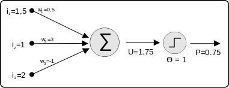

Bologna, 3 febbraio 2015
Agli amici degli
Incontri Interdisciplinari
Carissimi,
ci rivedremo lunedì 16 febbraio, alle ore 21, presso il Convento San Domenico, che ci ospiterà nella sua “sala rossa”, cui si accede da Via San Domenico 1.
La volta scorsa abbiamo proseguito la ricerca su "la persona umana"dal punto di vista della psichiatria e delle neuroscienze. Questo ci ha portati a desiderare di conoscere meglio il punto di vista di discipline come l'Intelligenza Artificiale ed altre affini.
Ci introdurrà l'ing. Fabio Frattini, che ringrazio a nome di tutti. L'argomento sarà
"atto riflesso e coscienza".
Un cordiale saluto in attesa di rivederci
fra Sergio Parenti O.P.
______________________________________
Breve resoconto dell'incontro Interdisciplinare del 16 febbraio 2015
a cura di fra Sergio Parenti O.P.
FRATTINI – Il nostro argomento è molto tecnico e non si addice ad una discussione tra amici, perché se si scende nel dettaglio non si capisce più niente. Si sarebbe dovuto fare un discorso più generale sull'intelligenza artificiale, di cui le reti neurali sono una parte. Ma anche questo è un discorso che si interseca con la filosofia della mente, con tante opinioni. Quest'ultimo argomento dovrebbe diventare oggetto di una serata ulteriore.
L'intelligenza artificiale si divide, grosso modo, in due filoni: i sistemi esperti e le reti neuronali. I sistemi esperti sono semplicemente programmi di computer che da un punto di vista esclusivamente funzionale cercano di riprodurre un ragionamento umano. I programmi imparano dall'esperienza (input) e supportano decisioni. Questi programmi sono tutt'ora applicati. Le reti neuronali cercano invece di imitare il funzionamento del cervello umano.
Che cos'è un neurone? Questa cellula presenta molte ramificazioni: è predisposta per collegarsi con altre cellule con molti terminali di input ed un solo output, che però si può ramificare. I primi si chiamano dendriti, il secondo si chiama assone. Il corpo della cellula è il soma. Come avviene il collegamento con gli altri? L'assone intercetta un dendrite e si collega ad esso tramite un oggetto che si chiama sinapsi, che consente un meccanismo elettrochimico di trasmissione di informazione. I collegamenti formano una rete molto complessa. Il corpo cellulare esegue una “sommatoria” (sembra che avvenga non in modo continuo, ma per impulsi): una sommatoria dei segnali di ingresso. Se il risultato supera una certa soglia, il neurone si attiva e produce un potenziale d'azione che esce dall'assone; altrimenti rimane inerte. Una rete neurale descrive una popolazione di neuroni fisicamente interconnessi tra loro o un gruppo di neuroni che definiscano un circuito riconoscibile.
Il funzionamento della cellula viene imitato da un dispositivo elettronico, anche se la definizione di “neurone artificiale” è puramente matematica. Il funzionamento biologico della cellula nervosa assomiglia, nel grafico, ad una curva sigmoide, che ricorda un cambiamento di stato, simile a quello operato da un flip-flop, circuito elettronico, che però ha un cambiamento con solo due stati (0, 1), mentre la sigmoide ha tutti gli stati intermedi.
Per imitare il comportamento della cellula nervosa si è ricorsi ad un oggetto matematico (neurone matematico). Una rete neurale artificiale è un modello matematico-informatico di calcolo basato sulle reti neurali biologiche. Tale modello è costituito da un gruppo di interconnessioni di informazioni costituite da neuroni artificiali e processi che utilizzano un approccio di connessioni di calcolo. Una rete neurale artificiale è, per lo più, un sistema adattivo che cambia la sua struttura basata su informazioni esterne o interne che scorrono attraverso la rete durante le fasi di apprendimento. Le reti neurali sono strutture non-lineari di dati statistici organizzate come strumenti di modellazione. Non-lineari vuol dire che non sono riducibili ad una espressione matematica reversibile: se vado da A a B non è detto che possa tornare ad A. Esse sono utilizzate per simulare relazioni complesse tra ingressi e uscite non rappresentabili dalle comuni funzioni analitiche.
McCulloch e Pitts sono stati i primi (1943: A logical calculus of the ideas immanent in nervous activity) a schematizzare un combinatore lineare a soglia, con dati multipli (può avere tanti ingressi quanti i dendriti). Un insieme di segnali è chiamato “vettore”. In algebra un inseme di valori coerenti è un vettore, in informatica un vettore x è una catasta di valori che la x può assumere (sono valori discreti, non continui). Un numero opportuno di tali elementi, connessi in una rete, è in grado di calcolare semplici funzioni booleane(AND, OR).
Prendiamo uno schema.

La cosa importante è il peso: nella connessione, cioè nella sinapsi, si può definire un “peso”, da 0 a 1, che è l'efficienza di trasmissione del segnale in ingresso. Questi pesi vanno moltiplicati per i rispettivi segnali, il tutto viene integrato dal corpo del neurone tramite una sommatoria, dopo di che c'è l'uscita (U=1,75). Poiché la soglia è uguale a 1, quello che viene propagato è l'eccesso (0,75). Questo segnale non è 0 o 1, ma posso considerarlo non digitale in senso stretto.
Nella rete tutte le combinazioni hanno un certo peso e contribuiscono al collegamento ingresso – uscita.
Il fatto che le sinapsi abbiano un peso con valori che possono cambiare mi permette di ipotizzare una rete capace di apprendere. L'apprendimento consisterebbe nel modificare il comportamento di una rete modificando il peso delle sinapsi.
Le prime ipotesi di apprendimento furono introdotte nel 1949 da uno studioso del cervello, Hebb, che aveva notato come nel cervello si stabilissero tra le cellule quei collegamenti che in qualche modo costituivano un premio: questo premio porta a creare stati stabili all'interno dei collegamenti tra le cellule del cervello. Hebb proponeva che qualcosa del genere venisse introdotto nelle reti neuronali.
Nel 1958 Von Neumann (The computer and the brain) esaminò le varie soluzioni proposte, sottolineandone la scarsa precisione. Nello stesso anno Rosenblatt (Psycological review) introdusse il primo schema di rete neurale: il Perceptron (percettrone), per il riconoscimento e la classificazione di forme, allo scopo di fornire un'interpretazione dell'organizzazione generale dei sistemi biologici. Il suo modello matematico probabilistico è mirato all'analisi di funzioni quali l'immagazzinamento delle informazioni e della loro influenza sul riconoscimento dei pattern (le trame). Quando ho una trama (ad esempio un disegno o uno schema: questo è un pattern). Ad esempio il riconoscimento dei caratteri di uno scritto (con un OCR) è un riconoscimento di pattern. I pesi delle sinapsi sono variabili e quindi il percettrone è in grado di apprendere. Nel 1969 Minsky e Papert (An introduction to computational geometry) mostrano i limiti delle semplici reti a due strati basate sul percettrone: questo tipo di rete neurale non è abbastanza potente e non riesce neanche a calcolare la funzione or esclusivo (XOR). Ne seguì un periodo di diffidenza e negli USA furono sospesi i finanziamenti a queste ricerche. Nel 1974 Werbos, matematico americano, risolse il problema; ma solo tempo dopo, grazie ad uno studio del Hopfield (1982), si riaprì la ricerca.
Il modello di rete a due strati, neuroni di ingresso e neuroni di uscita, era quello criticato.
PARENTI – Se ricordo bene Wittgenstein, le funzioni logiche sono tutte equivalenti. Se non calcola l' or esclusivo, non calcola neppure le altre.
FRATTINI – Non mi pare: la funzione END, ad esempio, la faceva. Uno degli aspetti più importanti era l'addestramento della rete. Mettendo uno strato intermedio, nascosto, nascono vari tipi di rete possibili. Ogni neurone è collegato con tutti gli altri, almeno indirettamente. Lo strato intermedio si occupa dell'elaborazione vera e propria, mentre lo strato iniziale e quello finale si occupano della gestione dei dati: come presentarli nell'output e come presentarli alla rete nell'ingresso. Posso fare reti che svolgano una funzione limitata. Poi posso collegarli per avere una super-rete. La frenologia cercò di associare parti del cervello a funzioni specifiche. Questa diventa una specie di frenologia, ma per risolvere problemi ingegneristici, tecnici, anche se la tentazione di farne una metafora del cervello è molto forte, ma riguarda la filosofia della mente. Noi ora parliamo di un oggetto tecnico.
L'addestramento della rete avviene tramite il cambiamento dei pesi delle sinapsi per svolgere una certa funzione. Ad esempio, un problema di classificazione è riconoscere, per l'OCR, una “ni” senza confonderla con una “m”. Il più applicato è l'apprendimento “supervisionato”: costringere la rete, dato un certo vettore di segnali di ingresso, a dare un certo vettore di segnali di uscita. L'algoritmo di “backpropagation” calcola una funzione di errore tra l'output ottenuto e quello che ci aspettiamo, e va a correggere i pesi delle connessioni con una certa forma di retroazione. Il paradigma di apprendimento “non supervisionato” ha un addestramento che invece si riferisce solo ai dati di ingresso per modificare i pesi; i problemi di ottimizzazione vengono affrontati in questo modo: in questi problemi non abbiamo dati di uscita previsti. Nell'apprendimento “per rinforzo” un opportuno algoritmo si prefigge lo scopo di individuare un certo modo di operare a partire da un processo di osservazione dell'ambiente esterno. Ogni azione ha un impatto sull'ambiente che produce una retroazione che guida l'algoritmo stesso nel processo d'apprendimento. Questo apprendimento differisce da quello “supervisionato” perché non sono mai presentate coppie di input-output di esempi noti. Questo è il caso tipico di quando devo guidare un veicolo alla cieca. Occorre un agente con sensori che danno dei dati e devo confrontare continuamente i dati elaborati con i dati che di nuovo mi restituisce l'ambiente. L'ambiente è continuamente fonte di dati ed io scelgo i dati giusti quando i dati concordano. Sono uscite delle auto che hanno una guida automatica.
GRAGNANO – C'è un riferimento messo da chi ha fatto la rete e vengono rinforzati solo i dati dove concordano le cose che io cerco con quelle che mi dà la rete.
FRATTINI – Esatto. Vi è poi l'apprendimento “hebbiano” (da Hebb): se due neuroni si attivano contemporaneamente, la loro connessione deve essere rafforzata. Se un collegamento corrisponde a certi criteri, viene premiato, fino a rendere stabili certe connessioni. Altrimenti le connessioni si indeboliscono.
GRAGNANO – Certi input modificano la funzione. Cambiando i pesi non cambia quello che c'è in mezzo tra input e output?
CASADIO – Cambia il valore di quella funzione, non la funzione. Se non sei soddisfatto perché il valore in output non coincide col valore atteso, torni indietro e correggi il valore dei pesi finché non ti coincide. L'input è tutto sommato fisso, e l'output è atteso. Questo viene posto dall'esterno.
FRATTINI – Gli algoritmi sono fatti da ingegneri, o meglio da dei matematici, trattandosi di oggetti matematici.
CASADIO – Sono algoritmi non convenzionali. Il backpropagation supervisionato permette di trovare se ci sono relazioni tra degli input e degli output, se non sei in grado di trovare la funzione analitica di supporto. Esiste un'altra categoria di reti neuronali non supervisionate, dove l'algoritmo devi trovarlo tu.
FRATTINI – Quando non so dove si andrà a parare, mi aspetto dei risultati, ma non so che cosa succeda tra input ed output. Il funzionamento di una rete non è esprimibile con una formula matematica.
SARTI – Nel nostro lavoro di ingegneri ci sono queste cose che si vede che funzionano, ma non si sa come siano fatte dentro.
FRATTINI – Senza scendere nei dettagli: nel 1982 Hopfield presenta un modello matematico di rete dove si ha l'emergere spontaneo di nuove capacità computazionali dal comportamento collettivo di un gran numero di semplici elementi di elaborazione. Le proprietà collettive del modello producono una memoria associativa per il riconoscimento di configurazioni corrotte ed il recupero di informazioni mancanti. Ogni sistema fisico può essere considerato come un potenziale dispositivo di memoria, se dispone di un certo numero di stati stabili che fungano da attrattore per il sistema stesso. Quindi la stabilità e la collocazione di tali attrattori sono proprietà spontanee di sistemi costituiti da considerevoli quantità di neuroni reciprocamente interagenti. Dunque il numero fa la differenza. Il gran numero di dati genera ulteriormente calcolo. Il calcolo produce numeri, ma anche i numeri possono spontaneamente generare calcolo. Cos'è un attrattore? Prendiamo una pallina su un piano inclinato che incontra una buca, e la sua energia cinetica non basta a superare la buca: la pallina resta nella buca. Per variare questo stato devo spendere energia, sollevando la pallina. Un calo del potenziale costituisce un attrattore. Possiamo definire potenziali non di energia, ma matematici ed anche di informazione. I cali di potenziale diventano stati stabili.
BELARDINELLI – Che cosa significa stabile? Senza risposta al variare dell'input?
FRATTINI – Per muovere la pallina devo superare una certa soglia, altrimenti la pallina resta lì.
Le reti di Kohonen sono mappe auto organizzanti, con un algoritmo di apprendimento non supervisionato, che ha dato luogo a molte applicazioni nei problemi di classificazione. Le mappe sono reticoli di neuroni artificiali i cui pesi sono continuamente adattati ai vettori presentati in ingresso nel relativo insieme di addestramento. L'algoritmo può essere descritto come un insieme di neuroni artificiali, ciascuno con una precisa collocazione sulla mappa che rappresenta gli output: il nodo avente un vettore di pesi più vicino ad un certo input è dichiarato vincitore ed i pesi stessi vengono aggiornati in modo da avvicinarli al vettore in ingresso, mentre i pesi dei nodi adiacenti vengono modificati secondo la regola che più un nodo è lontano dal nodo vincitore, meno marcata deve essere la variazione dei suoi pesi (il vincitore piglia tutto!). Ripetendo il processo la mappa riesce ad associare i nodi di uscita con i gruppi o schemi ricorrenti nell'insieme dei dati in ingresso.
Ci sono infine le reti ad attrattori, dove l'attrattore viene esemplificato non da una buca, ma da un'oscillazione. La loro dinamica, nel tempo, stabilisce un assestamento in un particolare modo di oscillazione, che può essere stazionario, variabile nel tempo oppure di tipo stocastico. Queste reti sono utili per investigare la teoria dei sistemi dinamici ed analizzarne le caratteristiche, ad esempio di stabilità o robustezza.
I pregi delle reti neurali: i neuroni lavorano in parallelo e sono sistemi di tipo statistico, per cui il cattivo funzionamento di una parte difficilmente blocca l'insieme. I software di ultima generazione richiedono comunque buone conoscenze statistiche: pur permettendo all'utente di fare subito previsioni o classificazioni, il grado di utilizzabilità mantiene i limiti del caso e non deve trarre in inganno.
I difetti: i modelli prodotti dalle reti neurali non sono spiegabili in linguaggio simbolico umano: vanno accettati così come sono (li definiscono “blak box”), a differenza di un sistema algoritmico dove si può esaminare passo per passo il percorso che dall'input genera l'output.
CASADIO – Non sono d'accordo.
FRATTINI – Chiaro che tu sai come funziona la rete, visto che la costruisci tu.
CASADIO – Per questo rispetto al cervello c'è un oceano.
FRATTINI – D'accordo. Infine le reti sono predittive solo se le variabili predittive sono scelte con cura. Per questo è importante l'esperienza di chi opera. Non c'è modo di definire la rete ottima: la riuscita dipende molto dall'esperienza del creatore della rete. Gli esempi di utilizzo sono gli OCR, il riconoscimento dei volti...
CASADIO – Non ci sono solo le reti neurali. Ci sono anche altri oggetti computazionali più efficienti. Ma non dovevamo parlare del cervello?
PARENTI – Nonostante quello che disse Aristotele 2400 anni fa, continua l'illusione di costruire la macchina pensante. Andiamo allora a vedere che cosa dovrebbe essere. L'apprendimento computazionale non mi pare sia lo stesso di cui parla Aristotele nel testo che vi ho inviato [vedi in calce al resoconto]. Siete capaci di confutarlo?
CASADIO – Il conoscere, secondo la biologia, è una trasformazione.
PARENTI – Quello è il problema. Aristotele dice che la trasformazione è l'atto di chi è imperfetto [incompiuto], mentre il conoscere è atto di chi è perfetto [compiuto]. Cosa rispondi?
FRATTINI – Non dobbiamo parlare solo di conoscenza. I filosofi della mente dicono che la coscienza è intenzionalità.
PARENTI – Per questo ho mandato un testo che parlasse della conoscenza in quanto tale. Anche se ci vogliono, per i sensi, le trasformazioni.
CASADIO – Ci vogliono le definizioni di conoscere, coscienza e intelletto, prima di addentrarci nella discussione.
_______________________
TESTO DI ARISTOTELE E COMMENTO
431a4 L'oggetto di senso risulta ciò che fa passare la sensibilità dalla potenza all'atto; infatti non subisce né è alterata. Quindi questa è una specie diversa di processo: il movimento infatti è atto di ciò che è imperfetto, invece l'atto senza restrizioni è diverso, è atto di ciò che è perfetto.
431a4 … Dunque, afferma per prima cosa che l'oggetto di senso risulta ciò che fa passare dalla potenza all'atto la parte sensitiva: infatti l'oggetto non agisce sul senso come un contrario agisce sul proprio contrario, in modo che qualcosa sia perso dal senso, trasformandolo e alterandolo, ma l'oggetto di senso lo riconduce soltanto dalla potenza all'atto; e per questo Aristotele aggiunge che la sensibilità non subisce né è alterata dall'oggetto di senso, mediante un subire e un'alterazione, propriamente intesi, cioè come quando uno dei contrari agisce sull'altro. E poiché i processi delle realtà corporee, determinati nel libro della Fisica1, sono passaggi da un contrario ad un altro, è chiaro che se si dice che l'aver sensazione è un processo, è una specie di processo diversa da quella determinata nel libro della Fisica: quella è infatti l'atto di ciò che è in potenza perché, cioè, ciò che recede da un contrario, finché si muove, non raggiunge l'altro contrario che è il termine del movimento, ma è in potenza ad esso e, poiché tutto ciò che è in potenza, in quanto tale, è imperfetto, allora quel processo è atto di ciò che è imperfetto; ma quest'altro processo è atto di ciò che è perfetto (di fatto è l'operazione di un senso che è già in atto grazie alla propria rappresentazione, infatti percepire non si addice che ad un senso che sia in atto), e perciò questo processo è del tutto diverso da quello fisico …
da TOMMASO D'AQUINO, Lo specchio dell'anima – La sentenza di Tommaso d'Aquino sul “De anima” di Aristotele, a cura del Progetto Tommaso, San Paolo, Cinisello Balsamo 2012, pag. 1033 per il testo di Aristotele, pag. 1037 per il commento di Tommaso.
1Per un riscontro di questo generico riferimento alla Fisica, cfr. Aristotele, Phys., III, 200b12-202b29.